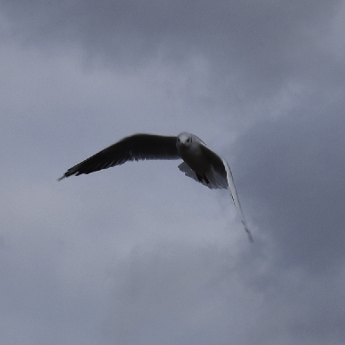
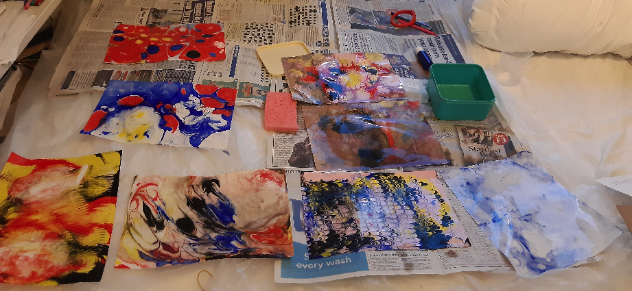
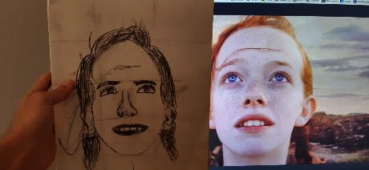
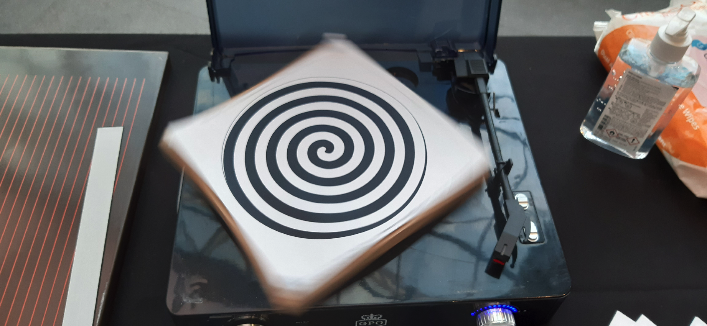

Nature Photography
I love experimenting with my camera outdoors, like on this sunny winter day at St. James's Park, London.
I wrote a popular science blog on Medium (15+ articles) explaining topics in neuroscience, AI, astrophysics, and human perception in plain language.
As a Science Museum Group Volunteer Guide, I lead tours for museum visitors (30+ tours for 300+ visitors so far, including two tours I designed from scratch):
I organised interactive public workshops showing how visual and auditory illusions reveal the workings of the brain, including events at the Great Exhibition Road Festival and Imperial Lates (100+ attendees).
An Associate Fellow of the Higher Education Academy (AFHEA), I taught and mentored students across mathematics, programming, and language:
I enjoy wildlife and nature photography, marbling art, portrait drawing, and cooking (and photographing what I make!).
Check out my Instagram (@instantwarhol) for more, or click any photo below to view it full-size.
I love experimenting with my camera outdoors, like on this sunny winter day at St. James's Park, London.

Nothing is quite as exciting as capturing a bird in mid-flight.

I enjoy cooking, photographing the dish, and then eating it.

I enjoy exploring different visual art styles like paper marbling.

Portrait sketch of one of my favourite TV characters, Anne Shirley Cuthbert from "Anne with an E".

Interactive public workshop on how illusions help us understand the brain, run with Nick, Mathilde, Mimmi, and James at Imperial Lates and the Great Exhibition Road Festival. Read more here.